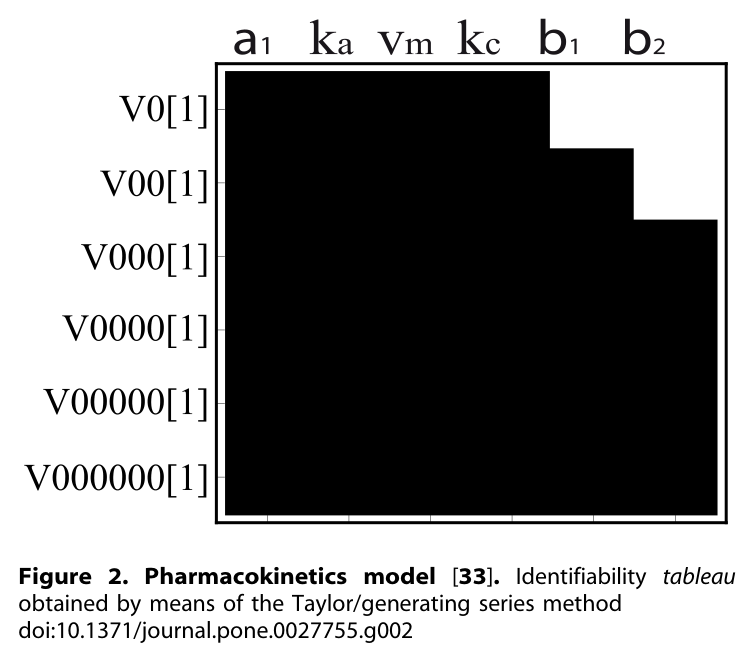
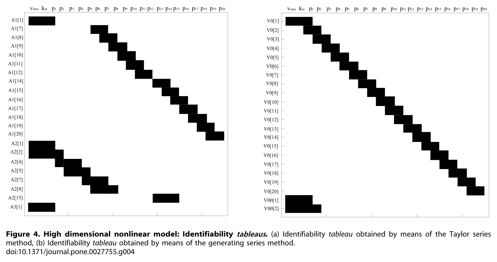
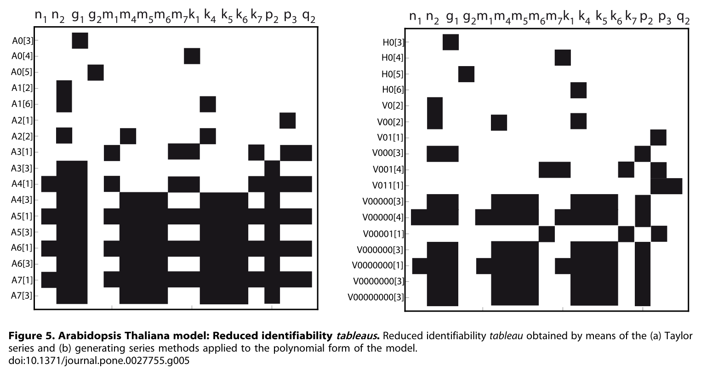

먼저 가져갈 세 가지 발견
좋은 기본값은 생성 급수 + 타블로
비교 사례에서 식을 상대적으로 단순하게 만들고, 부분 결과와 파라미터 의존 관계를 함께 보여 주었다.
상태 수만으로 난이도를 알 수 없다
20상태 모델도 전부 관측하면 빠르게 풀렸다. 관측 구조와 비선형 항의 형태가 계산 난도를 크게 좌우한다.
결과는 다음 실험을 가리킨다
어떤 변수를 더 측정할지, 일정한 입력 대신 어떤 자극을 줄지 판단하는 데 식별가능성 분석을 활용할 수 있다.
근거: Chiş et al.의 방법 비교 및 사례 분석. 논문 본문
추정의 실패가 데이터 탓만은 아니다
파라미터를 바꾸어도 같은 출력이 나오는 모델이 있다고 하자. 측정 잡음을 없애고 시간에 따라 연속적으로 관측해도, 그 출력만으로는 어느 파라미터가 참인지 구별하지 못한다. 이것이 구조적 식별가능성이 다루는 문제다.
반면 실제 데이터의 잡음, 부족한 표본, 제한된 실험 조건 때문에 추정이 어려운 문제는 실용적 식별가능성에 속한다. 구조적으로 식별 가능한 모델도 실제 데이터에서는 추정이 불안정할 수 있다.
- SGI구조적 전역 식별
- 거의 모든 파라미터 값에서, 같은 출력을 만드는 다른 파라미터 값이 없다.
- SLI구조적 국소 식별
- 파라미터의 충분히 작은 이웃에서는 유일성을 보장한다. 멀리 떨어진 다른 해가 남을 수 있다.
- SNI구조적 비식별
- 어떤 작은 이웃에서도 출력만으로 파라미터를 유일하게 구별할 수 없다.
여기서 완전 요약(exhaustive summary)은 입력과 출력으로부터 얻을 수 있는 파라미터 정보를 모두 담은 표현이다. 방법마다 이 정보를 급수 계수, 입출력 미분방정식, 또는 다른 대수적 관계로 꺼내어 비교한다.
정의와 배경: 원 논문의 Introduction 및 Structural identifiability definition. 출처
같은 질문에 접근하는 일곱 가지 방법
모든 방법은 결국 “같은 입력·출력이 다른 파라미터를 허용하는가?”를 묻는다. 차이는 무엇을 계산하고, 어떤 조건을 요구하며, 어디서 계산이 어려워지는가에 있다.
| 방법 | 핵심 원리 | 조건·강점 | 주요 한계 |
|---|---|---|---|
| 테일러 급수 | 초기 시점 주변의 출력 미분 계수를 구하고, 계수에 대응하는 파라미터 해의 유일성을 검사한다. | 급수 전개에 필요한 매끄러움·해석성 전제. 입력에 대한 비선형 의존도 다룬다. | 필요한 미분 차수를 미리 알기 어렵고 고차 대수식이 복잡해진다. |
| 생성 급수 타블로와 결합 |
출력을 벡터장 방향의 리 미분으로 전개하고, 계수의 파라미터 의존 관계를 분석한다. | 논문에서 다루는 형식은 입력에 선형·아핀 의존. 테일러 급수보다 단순한 식을 얻는 경우가 많다. | 충분한 미분 차수를 미리 알기 어렵다. 유한 차수에서 결과가 없다고 비식별이 확정되지는 않는다. |
| 유사 변환 | 입출력 관계와 모델 구조를 보존하는 상태 변환을 찾는다. | 관측가능성·제어가능성 등 적용 조건이 필요하다. | 조건 검증과 편미분방정식 풀이가 복잡하다. |
| 직접 검사 | 모델의 동등성 관계에서 파라미터 간 방정식을 직접 유도하고 푼다. | 자율·무입력 계에 적용하는 개념적으로 단순한 접근이다. | 형식적 대수 조작이 크게 늘어나 결론을 얻기 어려울 수 있다. |
| 미분 대수 DAISY |
미관측 상태를 소거해 입출력 미분 다항식을 만들고, 계수의 유일성을 검사한다. | 다항·유리식 모델. 계산이 완료되면 식별·비식별에 대한 명확한 정보를 얻는다. | 소거 과정의 계산·메모리 비용이 크다. 복잡한 유리식과 초기조건 처리에 어려움이 나타났다. |
| 음함수 정리 | 입출력 관계를 파라미터로 편미분한 식별 행렬의 정칙성을 검사한다. | 국소 식별 판정과 필요한 관측 변수 검토에 활용할 수 있다. | 전역 유일성을 보장하지 않으며, 파라미터가 많으면 행렬 구성부터 복잡해진다. |
| 반응망 이론 | 화학량론 행렬로 반응 속도의 식별성을 검사한 뒤, 파라미터 분석법을 결합한다. | 반응망 구조를 활용하며, 생성 급수와 결합할 때 효율적일 수 있다. | 적절한 반응망 표현이 필요하고, 파라미터 판정을 위한 추가 분석이 필요하다. |
작은 화면에서는 표를 좌우로 스크롤해 읽을 수 있다.
이 비교에서 GenSSI는 생성 급수와 타블로를 결합한 도구다. 알려진 초기조건을 반영하고 계산 중에도 일부 파라미터의 결과를 제공한다는 점이 장점으로 제시된다. 반면 당시 DAISY 구현은 계산이 완료되기 전까지 중간 결과를 얻기 어렵다는 한계가 있었다.
방법 및 구현 설명: 원 논문의 Methods와 Implementation of methods. 도구에 관한 평가는 2011년 논문 기준이다. 출처
어느 정보가 어느 파라미터를 드러내는가
식별가능성 타블로는 급수 계수를 파라미터로 미분한 야코비안의 0이 아닌 원소를 시각화한 표다. 열은 파라미터, 행은 급수 계수다. 검은 칸은 해당 계수가 그 파라미터에 의존한다는 뜻이다.
- STEP 01출력을 전개한다테일러 계수 또는 리 미분 계수를 계산한다.
- STEP 02의존 관계를 그린다각 계수를 파라미터로 미분해 타블로를 만든다.
- STEP 03순위를 확인하고 푼다독립적인 정보를 확인하고 해를 구해 타블로를 축소한다.
- 빈 열은 추가 검토의 신호다. 계산한 차수까지 그 파라미터가 나타나지 않았다는 뜻이다. 더 높은 차수에서도 정보가 없다는 근거 없이 비식별을 확정해서는 안 된다.
- 국소 식별의 핵심은 계수 개수가 아니라 야코비안의 순위다. 계수가 파라미터 수만큼 있어도 서로 종속이면 충분하지 않다. 적절한 일반점에서 완전 열 순위를 확보하는지가 중요하다.
- 단순한 행부터 방정식을 푼다. 하나의 파라미터에만 의존하는 행은 유용한 출발점이다. 해와 유일성을 확인한 뒤 해당 파라미터를 제거하고, 축소된 타블로에서 다음 순서를 찾는다.

타블로는 “어느 정보가 어느 파라미터를 드러내는가”를 보여 주는 지도다.
독서 노트의 해설 · 원 논문의 직접 인용이 아님
검은 칸이 적고 구조가 분리되어 있으면, 함께 풀어야 하는 파라미터 묶음을 찾기 쉬워진다. 다만 성긴 타블로 자체가 식별가능성의 증명은 아니다. 마지막 판단에는 순위 검사와 해의 유일성 확인이 필요하다.
타블로와 순위 조건: 원 논문의 Identifiability tableaus. 출처
여섯 모델이 보여 준 가능성과 한계
출력이 하나인 약동학 모델부터 모든 상태를 관측하는 20상태 모델까지. 사례들은 모델의 크기뿐 아니라 관측 방식, 입력 조건, 수식 표현이 결론에 어떻게 영향을 주는지 보여 준다.
| 모델 | 상태 / 출력 / 미지 파라미터 |
보고된 결과와 해석 |
|---|---|---|
| CASE 01Goodwin 진동자 | 3 / 1 또는 3 / 8 | 출력 하나에서는 급수법이 6차 미분까지 진행했으나 결론을 얻지 못했다. 전체 관측에서는 국소 식별, 다항식 재정식화와 전체 관측에서는 전역 식별을 확인했다. DAISY는 초기조건 미사용 시 비식별을 보고했고, 초기조건 적용 과정에서는 오류가 발생했다. |
| CASE 02약동학 2구획 | 4 / 1 또는 2 / 6–7 |
현실적인 단일 출력 조건에서도 급수법의 야코비안은 완전 순위를 얻어 국소 식별을 확인했다. DAISY는 단일 출력 조건에서 메모리 부족으로 계산을 마치지 못했다. |
| CASE 03해당과정 모사 경로 | 5 / 5 / 5 | 생성 급수, 미분 대수, 반응망 접근으로 전역 식별을 확인했다. 테일러 급수에서는 복수의 후보 해가 나왔고, 허용되는 실수·양수 범위에서의 유일성 확인이 어려웠다. |
| CASE 04고차원 비선형 모델 | 20 / 20 / 22 | 전체 상태를 관측하는 조건에서 전역 식별을 확인했다. 생성 급수는 약 4초, 비교 대상으로 인용된 DAISY 계산은 약 150분이었다. 급수법은 낮은 미분 차수로 필요한 순위에 도달했다. |
| CASE 05애기장대 생체시계 | 7 / 2 / 29 | 일정한 빛에서는 5개 파라미터가 비식별이었다. 펄스 자극에서는 급수법을 고차까지 적용했지만 부분 결과에 그쳤다. 다항식형에서는 더 많은 정보를 얻었으며, 생성 급수로 11개 파라미터의 유일해를 구했다. |
| CASE 06NF-κB 신호전달 | 15 / 6 / 13 | 일부 파라미터를 문헌값으로 고정한 조건에서, 생성 급수로 분석 대상 미지 파라미터 13개의 전역 식별을 확인했다. 미분 대수와 음함수 정리 접근은 계산상 어려움을 겪었다. 반응망과 생성 급수의 결합도 유효했다. |
근거: 원 논문의 Results, Case studies 1–6 및 제공된 노트의 수치 요약. 사례 분석 원문
20상태 모델: 크기보다 관측과 식의 구조
가장 눈에 띄는 계산 시간 차이는 20상태 모델에서 나왔다. 이 사례는 모든 상태를 관측하며 비교적 다루기 쉬운 구조를 갖는다. 생성 급수와 타블로의 결합은 파라미터를 단계적으로 분리해 푸는 데 효과적이었다.

애기장대 시계: 측정뿐 아니라 자극도 바꾼다
29개 파라미터에 출력이 2개인 애기장대 모델은 훨씬 까다로웠다. 일정한 빛과 펄스 형태의 빛은 서로 다른 정보를 제공했다. 다항식 재정식화도 더 많은 파라미터 정보를 끌어내는 데 도움이 되었지만, 모든 미지수를 해결하지는 못했다.

서로 다른 결론을 읽는 법
방법별 결과를 비교하려면 모델 표현, 입력, 관측, 초기조건이 같은지 먼저 살펴야 한다. 완전 순위는 확인했지만 기호 방정식을 끝까지 풀지 못한 경우에는 국소 식별만 보고될 수 있다. 반대로 초기조건을 생략한 분석은 특정 초기조건을 사용하는 실험과 다른 문제를 풀고 있을 수 있다.
메모리 부족, 기호 계산 실패, 미분 차수의 한계는 ‘미결론’이다. 이를 구조적 비식별의 증거로 바꾸어 읽어서는 안 된다.
해석 근거: Goodwin, 약동학, 애기장대 및 NF-κB 사례의 계산 조건과 결과. 출처
방법 선택을 실험 설계로 연결하기
논문이 제안하는 실용적 출발점은 생성 급수와 타블로다. 그러나 적용 조건을 확인한 뒤, 필요한 결론과 계산 가능성에 맞춰 다른 접근을 함께 검토해야 한다.
-
입력에 선형·아핀 의존하는 모델이라면 생성 급수부터 검토한다.
GenSSI와 타블로를 통해 초기조건을 반영하고, 전체 판정에 도달하기 전에도 어떤 파라미터가 드러나는지 살핀다. 반응망 구조가 있다면 함께 활용한다.
-
비식별을 확정하려면 완결된 분석을 확보한다.
다항·유리식 모델에서 미분 대수와 DAISY가 후보가 된다. 적용 전제와 초기조건 처리를 확인하고, 계산 오류를 비식별 판정으로 취급하지 않는다.
-
입력에 비선형으로 의존한다면 방법의 적용 범위를 다시 확인한다.
논문은 이런 경우 테일러 급수를 대안으로 제시한다. 다만 급수 전개에 필요한 매끄러움이 확보되어야 하며, 입력 비선형과 상태 비선형을 구분해서 보아야 한다.
-
부분 결과를 얻었다면 측정과 자극을 바꾸는 근거로 쓴다.
더 관측해야 할 상태, 구별되지 않는 파라미터 조합, 입력 변화로 드러날 정보를 검토한다. 유사 변환·직접 검사·음함수 정리도 해당 구조에서 적용 가능할 때 선택적으로 사용한다.
다항식 재정식화는 계산을 돕는 표현상의 선택이다. 동등한 모델이라면 표현을 바꾸었다는 이유만으로 실험 정보가 새로 생기지는 않는다. 더 많은 결과를 얻었다면, 이전 계산에서 드러내지 못했던 정보를 풀어낸 것인지 관측·제약 조건까지 달라진 것인지 구분해야 한다.
선택 지침은 원 논문의 비교 결과를 재구성한 것이다. 현재 도구 전체의 성능 순위를 의미하지 않는다. 원 논문
HR35 유압 모델에는 무엇을 가져갈까
이하 내용은 독서 노트의 HR35 적용 의견을 정리한 연구 제안이다. 생물 모델에서 얻은 결과를 유압 모델의 식별가능성 판정으로 곧바로 옮길 수는 없다.
먼저 비선형 항이 어디에 걸리는지 구분한다
노트의 HR35 모델에는 밸브 명령의 데드밴드와 √ΔP 같은 항이 등장한다. 데드밴드는 입력 의존성 및 구간 경계의 매끄러움을 확인해야 할 대상이다. √ΔP는 압력 상태의 비선형일 수 있으므로, 그 존재만으로 입력에 선형인 생성 급수 형식을 배제할 수는 없다.
밸브 비선형을 별도 변수·상태로 표현하는 경로와 테일러 급수를 적용하는 경로를 검토하되, 새 상태의 초기조건과 제약, 원래 모델과의 동등성을 함께 확인해야 한다. 특히 매끄럽지 않은 경계를 포함한다면 테일러 급수도 자동으로 적용되는 대안은 아니다.
압력 센서의 가치는 채널 수보다 독립적인 정보에 있다
노트에 따르면 디지털 트윈은 수십 개 파라미터에 대해 경사계 3채널과 압력 6채널을 사용한다. 압력 관측이 파라미터의 모호성을 줄일 가능성은 크지만, “압력을 빼면 반드시 비식별”이라고 지금 단정할 수는 없다.
각도만 사용하는 경우, 각도와 압력을 함께 사용하는 경우, 특정 압력 채널을 제외하는 경우를 같은 입력·초기조건 아래에서 비교해야 한다. “버킷 압력을 뺄 수 있는가?”는 이 비교를 통해 답할 수 있는 구체적인 질문이다.
타블로를 첫 계산 과제로 삼는다
타블로는 어떤 관측 계수가 어떤 파라미터에 정보를 주는지 보여 준다. 다만 높은 미분 차수가 필요하다는 사실이 곧바로 빠른 자극을 쓰라는 처방은 아니다. 실제 자극은 센서 대역폭과 잡음, 운전 조건까지 고려해 설계해야 한다.
- 미지 파라미터, 고정값, 초기조건, 실제 관측 함수를 명시한다.
- 밸브 명령과 압력 상태에 대한 비선형 의존성을 각각 정리한다.
- 관측 채널 조합별 타블로와 야코비안 순위를 비교한다.
- 구별되지 않는 파라미터 조합과 이를 드러낼 입력 후보를 기록한다.
- 판정을 전역 식별·국소 식별·비식별·미결론으로 나누어 보고한다.
분석 상태: 제안 단계. 이 글에는 HR35의 실제 방정식을 이용한 식별가능성 계산 결과가 포함되어 있지 않다.
추정을 시작하기 전에,
구별할 수 있는지 먼저 묻자
이 비교 연구의 실용적 교훈은 분명하다. 생성 급수와 타블로는 유용한 출발점이며, 분석이 어려워질수록 모델의 표현, 관측 변수, 입력 자극을 함께 보아야 한다.
다음 모델에서 먼저 적어 볼 것은 세 가지다. 무엇을 모르는가. 무엇을 관측하는가. 무엇을 바꿔 가며 실험할 수 있는가. 이 세 목록 사이의 관계를 확인하는 일이, 더 잘 맞는 모델을 만들기 위한 첫 단계다.
출처와 편집 노트
기본 문헌
Chiş, O.-T., Banga, J. R., & Balsa-Canto, E. (2011). Structural Identifiability of Systems Biology Models: A Critical Comparison of Methods. PLoS ONE, 6(11), e27755. doi:10.1371/journal.pone.0027755.
원 저자 소속
Bioprocess Engineering Group, IIM-CSIC, Vigo, Spain.
그림과 이용 조건
그림 2·4·5는 원 논문의 이미지를 사용했다. © 2011 Chiş et al. 원 논문은 Creative Commons Attribution(CC BY) 조건으로 공개되어 있으며, 각 그림 설명에 출처를 연결했다.
노트를 정리하며 명확히 한 부분
국소 식별의 조건은 급수 계수의 개수가 아니라 야코비안 순위로 표현했다. 관측이 적은 사례를 모두 부분 결과로 묶지 않고, NF-κB에서 분석 대상 파라미터의 전역 식별을 얻었다는 결과를 구분했다. 계산 시간은 논문에 보고된 사례값으로 제시했다.
HR35 관련 내용은 원 논문의 결과와 분리된 적용 가설이다. 특히 센서 제거의 영향, 비선형 항의 재정식화, 자극 설계의 효과는 실제 모델로 추가 검증해야 한다. 노트에서 언급한 Villaverde 2018은 정확한 서지정보가 제공되지 않아 별도의 검증 근거로 사용하지 않았다.
- 구조적 식별가능성
- 생성 급수
- 식별가능성 타블로
- 미분 대수
- DAISY
- GenSSI
- 실험 설계
- 다항식 재정식화